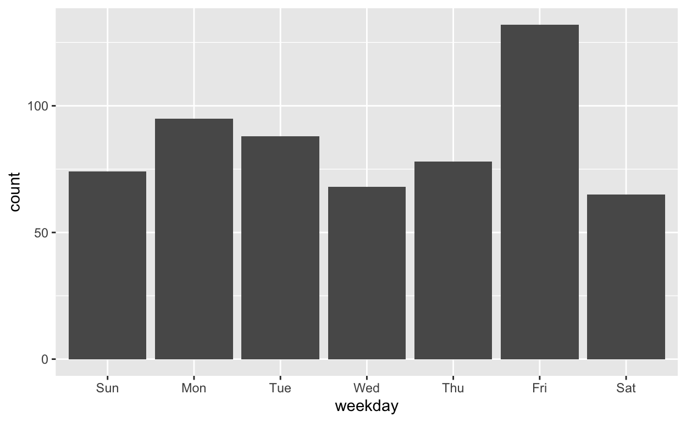
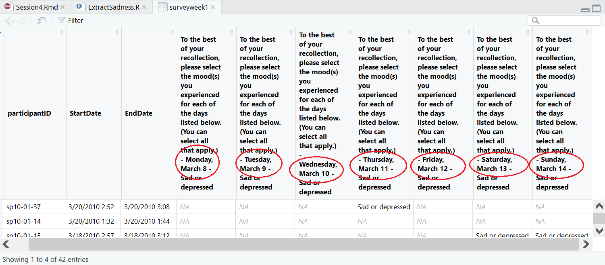
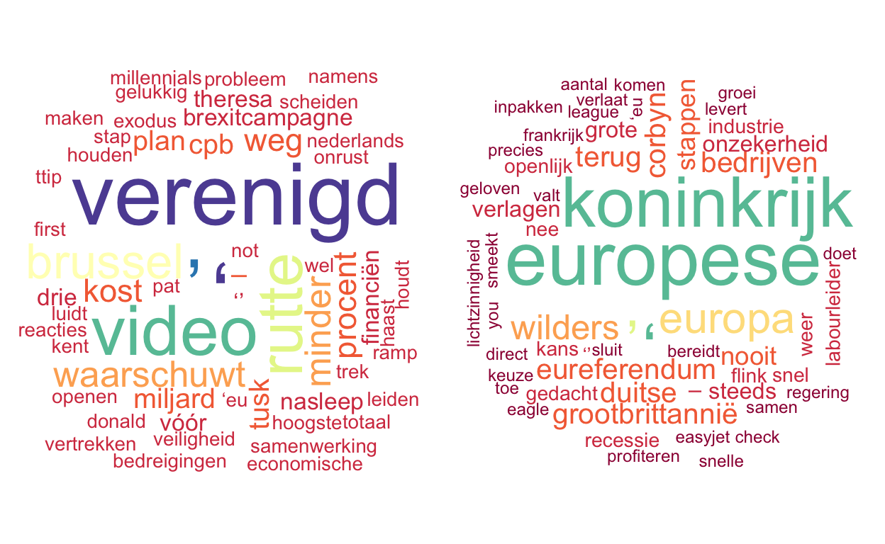

Overview
- Factors
- Dates & Times
- Strings
Factors
- Factor: R data type for a categorical (nominal or ordinal measurement level) variable.
Character variables
- R treats a character variable as a categorical variable (nominal measurement level).
Example data set Brexit: 600 articles about Brexit from
the (former) news website nujij.nl.
Create a frequency table of the variable category in the
Brexitdataset.
# Use the count() function and a pipe.
count()Note the order of values in this frequency table: alphabetical.
In addition, note the negligible number of observations for media, etc.
Character variable in statistical analysis
- A character variable is usually converted to dummies in statistical analysis.
- Regression models in R do this automatically.
Below are the results of a regression model predicting the number of votes for a post from the post category.
# Linear regression: more in Session 6.
lm(votes ~ category, data = Brexit) |>
broom::tidy() |> #retrieving the main results
kable(digits = c(0,2,2,2,3),
col.names = c("Parameter", "b", "SE", "t", "p"),
align = "lrrrr") |>
kableExtra::kable_classic(full_width = FALSE)| Parameter | b | SE | t | p |
|---|---|---|---|---|
| (Intercept) | 6.18 | 0.49 | 12.67 | 0.000 |
| categoryEconomie | -2.45 | 1.03 | -2.38 | 0.018 |
| categoryMedia | -4.18 | 8.82 | -0.47 | 0.636 |
| categoryOverig | 0.82 | 8.82 | 0.09 | 0.926 |
| categoryPolitiek | 2.46 | 0.82 | 2.99 | 0.003 |
| categoryShowbizz | -4.18 | 8.82 | -0.47 | 0.636 |
| categoryWetenschap | -5.18 | 8.82 | -0.59 | 0.557 |
- Want another reference category or reorder the categories? Create a factor.
Programming Tip
- Having the values in another order than alphabetically is the main reason for using a factor instead of a character variable.
Create a factor
Create a factor called cat_fact from the variable
category and add it to tibble Brexit.
Brexit <- Brexit |> # Use mutate().
Brexit <- Brexit |> mutate()# Use the (base::) `factor()` function.
factor(x = )Have a close look at the description of the new factor:
# Info shown in Environment tab if you work in RStudio.
str(Brexit$cat_fact) Factor w/ 7 levels "Algemeen","Economie",..: 1 5 5 2 5 1 1 1 1 1 ...- Factor: a set of labels (levels) plus a set of integer values.
- In contrast to SPSS, we must use the labels, we cannot use the integer values!
Change the first factor category
- By default, The first category of a character variable or factor is the reference group.
- Reset the first category to change the reference group.
Use the previously created factor cat_fact to add a new
factor called cat_new to tibble Brexit in
which Economie (Economy) is the first
category.
# Use `fct_relevel()`, which is part of the `forcats` package,
# which is loaded by the `tidyverse` package.
fct_relevel()# Oh yes, use mutate() again. You should know that by now.
Brexit <- Brexit |>
mutate()Now check that Economie is the reference category in a
regression model.
# Adapt the code for a regression model from a previous exercise.
# Use only the `lm()` function, which will send the results to the screen.
# That suffices for checking the reference category.Hint: Regression function: lm(y ~ x, data = ).
lm(votes ~ cat_new, data = Brexit)Notes:
- We save the changes in the
Brexittibble because we want to use the reordered factor later on in this tutorial. - We use a new name for the new variable, so the original variable is preserved.
Recode factor levels
- Categories
Media,Overig(Other),Showbizz, andWetenschap(Science) contain only one observation.
Merge these with category Algemeen (General) in
a new variable cat_fact2 in tibble Brexit.
Inspect the result.
# Use variable `cat_fact` as your starting point.# Use function `fct_recode()`.
mutate(cat_fact2 = fct_recode(cat_fact, ))Grouping a numeric variable into a factor
- Variable
reactions: the number of reactions that a post received. - We want a new variable that groups the number of reactions into three bins.
- Each bin should contain more or less the same number of observations (posts).
Unfortunately, variable reactions is not numeric.
Use function parse_number() to create a new numeric
variable react_num in tibble Brexit, which
gives us the number of reactions to a post. Check the results with a
frequency table of reactions -
react_numcombinations.
#
Brexit <- Brexit |> mutate( ____ )
Brexit |> count()# Remember the structure of mutate:
mutate(new_var = function(old_var))# Function `parse_number()` is part of the `readr` package, which is loaded by
# the `tidyverse` package.
# Use help on function parse_number() if you need it.# Select two variables to be counted in count().Group the number of reactions in three bins with (nearly) the same
number of cases and store this variable as a factor named
react_cat in tibble Brexit.
# There are two steps. In the first step, bin the numeric variable.
ntile()# In the second step, create a factor from the bins.
# The two steps can be performed in one `mutate()` function. It is even possible
# to use the same name for the new variable in both steps.
mutate(
react_cat = ntile(react_num, 3),
react_cat = factor()
)The three reactions bins should be labeled “low”, “medium”, “high”. But the substantive order from low to high does not match the alphabetical order. The bins variable must therefore be a factor.
Plot a bar chart of the factor representing the reactions bins. Are the bins in the desired order?
# Use ggplot() and geom_bar().Programming Tip
- An ordered factor assigns ordinal measurement level. In a regression model, no ordinary dummy variables are created for an ordered factor. So avoid ordered factors, unless you really need an ordinal variable.
Dates and Times
Programming Tip
- Never assume that dates and times are correctly read.
Date-time data object
Example: Publication date of post on nujij.nl in tibble
Brexit.
## chr [1:600] "May 30, 2016 18:01:31" "May 31, 2016 16:35:00" ...Date plus time of day is a character string here.
To work with dates and times change to POSIXct data
type.
- Number of seconds since the beginning of 1970.
- Shown in the standard format (of your computer locale).
String to date-time
Brexit, variablepubDate: date and time an article was posted as a string, e.g., “May 30, 2016 18:01:31”.
Create a date-time variable pubDateTime in tibble
Brexit using a parse function in package readr
(p. 297 {Ch. 17.2.1}). Check the results with a frequency table.
# Create and add the date-time variable.
Brexit <- Brexit |> ____
# Check the results
Brexit |> _____# The parse function is `parse_datetime()`.
parse_datetime(pubDate, format = "")# Carefully specify the date and time formatting codes.
# See help for `strptime()` under __Details__.Now do the same with the lubridate package (p. 298 {Ch.
17.2.2}), storing the results as a new variable
pubDateTime2 in tibble Brexit.
Brexit <- Brexit |>
mutate(____)# Select the correct function. Check out help for `ymd_hms()`.- Package
lubridatesimplifies the identification of date/time elements. - Date and time formatting codes are also used for displaying dates and times.
Programming Tip
- Especially when you let
readrguess the date and time format, the results can be wrong. Always compare the new date-time variable to the original string variable.
Retrieve info from date-time
It is easy to get the date from a date-time (POSIXct) variable with
the lubridate package.
Add a variable date to the Brexit tibble;
derive it from the recently created variable
pubDateTime.
Brexit <- Brexit |>
mutate(____)# How about the `date()` function in package lubridate?Inspect the dates of the posts with a frequency polygon.
# Pay attention to the `stat` argument in `geom_freqpoly().
# Look the value up under __Computed Variables__ in the RStudio help on
?geom_freqpoly()- Note that there is a
datevariable type in R. It behaves just like adate-timevariable. date()is also a base R function. When you load thelubridatepackage, the base Rdate()function is overriden.
It is also easy to get the weekday with the lubridate
package.
Use the pubDateTime variable to calculate the weekday at
which a post was published as a new variable weekday
containing the names of the weekdays. Store it in the
Brexit tibble and inspect a frequency table of the
weekday variable.
# This time, start from scratch...Hint: How about the wday()
function?
Brexit |> mutate(weekday = wday(pubDateTime, label=TRUE)) |> select(weekday)
Variable weekday must be a factor. How can you tell?
- It is tricky to get the time of day because R has no time data type.
- The book offers a trick (Chapter 17, Section Setting Components {17.3.3}).
Apply this trick to the pubDateTime variable in tibble
Brexit to create a variable time. Show the
variable as an area plot; don’t save it. Put all code in one pipe!
Brexit |>
mutate(____) |>
ggplot(____)# Use the `update()` function.
update()# Use `geom_area()`.
ggplot(aes(time))
+ geom_area()# And use `scale_x_datetime` to set the labels of the horizontal axis to hour.
ggplot(aes(time))
+ geom_area()
+ scale_x_datetime()Calculating with date-time
- Let us have a look at the time span between successive posts.
- How long does it take for a new post to appear?
Subtract the pubDateTime of the previous post from the
pubDateTime of the current post and store the result as
variable lapse in tibble Brexit.
Brexit <- Brexit |>
arrange(____) |>
mutate(____)# Sort the data to be sure that they are in chronological order before you
# calculate the time lapse.# Use the `lag()` function.
lag()- The time difference between subsequent postings are clearly in seconds (see above table).
- What if we use the dates of publications?
Show the difference in days (dates) between subsequent posts (new
variable lapse2) for the first six posts in a table.
Brexit |>
arrange(____) |>
mutate(____) |>
select(___) |>
____(____)# Don't save the new variable lapse2, just show it in a table.# Show only date and lapse2 in the table.# Use slice() to select the first six rows.- Now the difference is expressed in days.
Subtracting two date-times:
- yields data type
difftime; - which can have several time units;
- namely, the largest time unit that is smaller than the smallest measured time difference.
We don’t like unpredictable results!
Data type duration:
- Always expresses time differences in seconds.
- Change
difftimeintodurationwith theas.duration()function. See the book for more details.
Programming Tips
- Work with data type
durationinstead ofdifftimeunless you have to take into account daylight saving and leap seconds. - Note: For minutes, hours, days, and weeks, a
durationcan be divided (ignoring leap seconds) by the appropriate number of seconds.
Strings
String manipulation
Main applications:
- Change string into another type (factor, date, number) that is more
convenient for analysis.
- Examples in previous topics of this tutorial (string to factor or
date-time).
- Examples in previous topics of this tutorial (string to factor or
date-time).
- Query and quantify natural text contents.
- Find texts with particular contents.
- Change content characteristics into variables.
- Find texts with particular contents.
Topic 2 is esp. relevant for students working on a complex data set including text (natural language): Alcohol Posts and Use, German Chancellor Debate .
Change variable names
Friends & Families weekly survey: nasty variable names. Use
rename()?

- Data sets in the wild often contain troublesome variable names.
- We can use
rename()to change each name one by one. - Instead, let’s handle variable names as string data and use string manipulation techniques to simplify the variable names.
Objective: Simplify the variable name to the date for which the sad/depressed score was entered.
Programming Tip
- If possible, first create code that works for one example. Next, extend the code to deal with all cases.
- First example of a troublesome variable name in tibble
surveyweek1.
# Get a variable name as a character variable with the names() function.
names(surveyweek1)[4][1] "To the best of your recollection, please select the mood(s) you experienced for each of the days listed below. (You can select all that apply.) - Monday, March 8 - Sad or depressed"# [4] selects item 4 from the vector of variable namesManipulate one variable name
Step 1: Remove all up to (and including) the first ” - “.
Run the below code and inspect the intermediary results to check that
you understand what each line of code does. For example, why is there
+ 1 within the str_sub() function?
# Store variable name in a data object, so we can use it.
varname <- names(surveyweek1)[4]
# Show result to check that the code works.
varname # Intermediary result. Comment out in your Data Project code!
# Find the first position of " - ".
# Show results for understanding before using it below.
str_locate(varname, " - ") #start and end position!
# Intermediary result. Comment out in your Data Project code!
# Select everything after the end position of " - ".
varname <- str_sub(varname, start = str_locate(varname, " - ")[2] + 1)
# Show result to check that the code works.
varname # Intermediary result. Comment out in your Data Project code!The book focuses on finding and replacing particular strings/words:
str_locate()withstr_sub()are nice for cutting up a string.[2]behind str_locate() selects the second item of the vector: the end position.
We now have:
## [1] "Monday, March 8 - Sad or depressed"Step 2: Get rid of the weekday name, so remove all up to (and including) “,”.
Run the below code and inspect the intermediary results to check that you understand what each line of code does.
# Select substring after the end position of ", ".
varname <- str_sub(varname, start = str_locate(varname, ", ")[2] + 1)
# Show result: see the difference.
varname # Intermediary result. Comment out in your Data Project code!Step 3: Get rid of the “Sad or depressed” part, so remove all from (and including) ” - “.
Run the below code and inspect the intermediary results to check that you understand what each line of code does.
# Show the name that we start with.
varname
# Select substring up to start position of " - ".
varname <- str_sub(varname, end = str_locate(varname, " - ")[1] - 1)
# Show result: see the difference.
varnameThis is the variable name that we were after.
Programming Tip
- It is good practice to check intermediary results, so you know that your code performs as expected.
- It is equally good practice to comment out code that is only used for checking intermediary results when the code is definitive.
(for code experts…)
Note that start and end arguments can be
combined in sub_str(). Steps 2 and 3 can thus be done in
one command.
Write the str_sub()function that combines Steps 2 and
3.
str_sub(varname, )Hint: You should be able to figure this out. Use
help on the str_sub() and str_locate()
functions.
str_sub(varname, start = str_locate(varname, ", ")[2] + 1, end = str_locate(varname, " - ")[1] - 1)Manipulate all variable names
Let us apply the commands to all relevant variables (sequence 4 to 10).
Run the below code. What do names() and
str_locate() produce now?
# Get all selected variable names.
varname <- names(surveyweek1)[4:10]
# Check result.
varname
# Get the start and end positions.
str_locate(varname, " - ")str_locate()creates a matrix with start and end position columns for each variable.- Instead of a single value, we must select a column to get start or
end positions.
- Start positions: first column
[,1]; - End positions: second column
[,2].
- Start positions: first column
# Get the end positions from the matrix.
str_locate(varname, " - ")[,2]Adjust the commands that we have created for changing one variable name to changing the names of all relevant variables.
# Store variable name in a data object, so we can use it.
varname <- names(surveyweek1)[4]
# Select everything after the end position of " - ".
varname <- str_sub(varname, start = str_locate(varname, " - ")[2] + 1)
# Select substring after the end position of ", ".
varname <- str_sub(varname, start = str_locate(varname, ", ")[2] + 1)
# Select substring up to start position of " - ".
varname <- str_sub(varname, end = str_locate(varname, " - ")[1] - 1)
# Check result.
varname# Start selecting all variable names instead of only the first.
varname <- names(surveyweek1)[4:10]# Check intermediate steps, as we have done before.
# For example: What does str_locate() yield now?
str_locate(varname, " - ")# Instead of a single end position, we need a column of end positions.
# Check out the difference between:
str_locate(varname, " - ")[2]
str_locate(varname, " - ")[,2]
# A comma makes a big difference...Once we have the correct variable names, we can use them to replace
the names in the surveyweek1 tibble.
# Replace variable names in tibble.
names(surveyweek1)[4:10] <- varname
# Inspect results
str(surveyweek1)Tidyverse alternative
Because the variable names are so well structured in this particular
example, we can achieve the same with the tidyverse
separate() function.
Inspect the results of each step in the pipe with
View(). Note that the View window may be hidden behind
another screen.
#tidyverse requires a data frame
varnames <- tibble(name = names(surveyweek1)[4:10]) |>
#split each name into three parts
separate_wider_delim( name , delim = " - ", names = c("humbug", "date", "topic")) |>
#split the date into weekday and date
separate_wider_delim( date, delim = ", ", names = c("weekday", "date")) |>
#extract the date variable as a vector
pull(date)
# Replace variable names in tibble.
names(surveyweek1)[4:10] <- varnames
# Show result.
str(surveyweek1)- Tidyverse functions only operate on data frames;
- but the variable names are a vector: just a series of names.
- So we change them into a data frame at the start with
data_frame(), - and transform them back to a vector (without variable name) at the
end with
pull().
Fancy Stuff
Natural text such as the header or body text of posts is used for classifying texts (topic modelling), for example, using sentiment analysis, or investigating relations between words, e.g., as visualized in a word cloud.
Word cloud
- Special R data class
Corpushandles sets of texts. tmpackage: tools for creating, cleaning, and manipulating a corpus of texts.
Let us use this package and the wordcloud package to
create some word clouds.
Use help and inspect intermediary results to understand what happens here.
# Load the required packages.
library(tm)
library(wordcloud)
library(RColorBrewer)
# Create a corpus for the headings (titles) of the Brexit articles.
docs <- Brexit |>
# extract the titles as a vector
pull(title) |>
# use tm functions to create a corpus
tm::VectorSource() |>
tm::Corpus() |>
# use tm functions to clean the data
tm::tm_map(removeNumbers) |> #remove numbers (assuming they are not informative)
tm::tm_map(removePunctuation) |> #remove punctuation (assuming they are not informative)
tm::tm_map(stripWhitespace) |> #remove blanks
tm::tm_map(content_transformer(tolower)) |> #only lower case letters
tm::tm_map(removeWords, stopwords("dutch")) #remove Duch stopwords
# Create our first wordcloud.
wordcloud::wordcloud(
docs,
random.order = FALSE,
colors = RColorBrewer::brewer.pal(11, "Spectral")
)- The word Brexit clearly dominates the word cloud.
- Articles have been selected because this word appears!
- Let us make a word cloud without it.
Play around with the selection of words and the arguments of the
wordcloud() function.
docs |>
#remove word "brexit"
tm::tm_map(removeWords, c("brexit")) |>
#create wordcloud
wordcloud::wordcloud(
random.order = FALSE,
colors = brewer.pal(11, "Spectral")
)Topic modelling
Document-term-matrix:
- Used for classifying texts based on the (co-)occurrence of words.
- Is a data matrix with rows (or columns) for texts (documents) and a column (or row) for each word that appears in at least one text.
- Cells contain frequencies: How many times does this word occur in this document.
The tm package can create document-term-matrices from a
text corpus.
The code below must identify two topics in the Brexit
texts and shows these as two word clouds.
Play around with the number of topics in the lda()
function. Note that the code only displays the first two topics.
# Load the required package.
library(topicmodels)
# Create a document-term-matrix from the corpus.
dtm = tm::DocumentTermMatrix(docs)
# Run a Latent Dirichlet Allocation topic model with 2 topics
lda = topicmodels::LDA(dtm, k = 2, seed = 234)
# Calculate the probabilities that a text or word belongs to Topic 1 or Topic 2.
pred = topicmodels::posterior(lda,dtm)
# Show word clouds of terms that are more strongly related to one topic than to the other.
# First, create a tibble with the ratio of the probability that a term links with Topic 2 over the probability that a term links with Topic 1.
probRatio <- pred$terms |> as_tibble() |>
rownames_to_column(var = "topic") |> #preserve topic number as variable
#turn term variables into one variable
pivot_longer(!topic, names_to = "term", values_to = "prob") |>
#calculate the probability ration
group_by(term) |>
arrange(term, topic) |>
mutate(pratio = prob / lag(prob, n = 1L)) |>
#only retain the rows with a valid probability ratio (namely, topic 2)
filter(topic == 2)
# Show two plots side by side.
par(mar = c(0, 0, 0, 0), mfcol = c(1, 2))
# Wordcloud Topic 1: terms that are at least 5 times more likely for topic 1.
nottopic1 <- probRatio |>
filter(pratio > 0.2) |>
pull(term) #we need a vector for the removeWords() function
docs |>
#remove word "brexit"
tm::tm_map(removeWords, nottopic1) |>
#create wordcloud
wordcloud::wordcloud(
random.order = FALSE,
colors = RColorBrewer::brewer.pal(11, "Spectral"),
min.freq = 2
)
# Wordcloud Topic 2: terms that are at least 5 times more likely for topic 1.
nottopic2 <- probRatio |>
filter(pratio < 5) |>
pull(term) #we need a vector for the removeWords() function
docs |>
#remove word "brexit"
tm::tm_map(removeWords, nottopic2) |>
#create wordcloud
wordcloud::wordcloud(
random.order = FALSE,
colors = RColorBrewer::brewer.pal(11, "Spectral"),
min.freq = 2
)
Well, what’s the difference between the two topics? Note that the results may change dramatically from one run to the next. Perhaps, there is just one story.
What’s next
- You now know everything you might need to complete the group part of the data project (Deadline: November 21st).
- We recommend that you keep working in the SCRUM-Light framework as you approach the individual part of the assignment to keep each other on track and keep the community alive.
- In your Sprint Backlogs, make time for both the individual data project and exam prep!
- Remember, what you produce from now on should be an individual effort. Your group can help discuss ideas and give some feedback, but you need to do the work yourself.
What’s next - Continued
- Sprint 3: Complete backlog, Retrospective & Review.
- Sprint 4: Planning, Update Project Backlog.
- New additions: Practice with special variable types that occur in your dataset and complete related tidying tasks.
- Remember that starting after Session 7, you can also start to seriously think about your individual project in parallel to finishing the group part by the deadline. Plan in time to prepare for individual consultations in Session 8.
And as always…
- Study course content
- Meet your buddy
- Sprint 4 SCRUM masters: Keep your team on course!